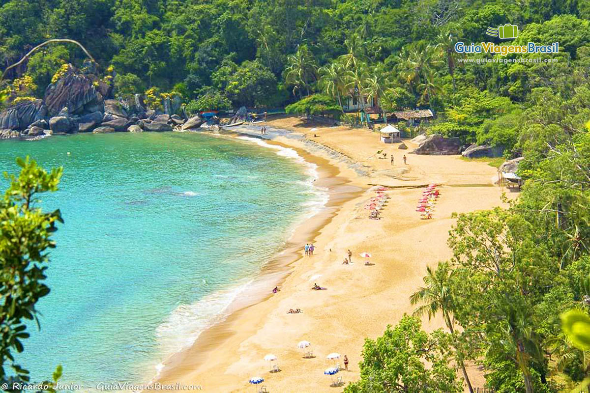

Praia de Ilhabela
Ilhabela é um verdadeiro paraíso no litoral paulista, famoso por suas praias paradisíacas, trilhas na mata atlântica, cachoeiras e uma rica biodiversidade. Perfeito para quem busca contato com a natureza e paisagens deslumbrantes.